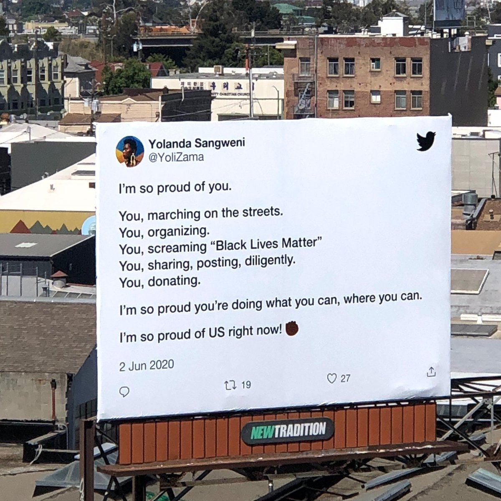
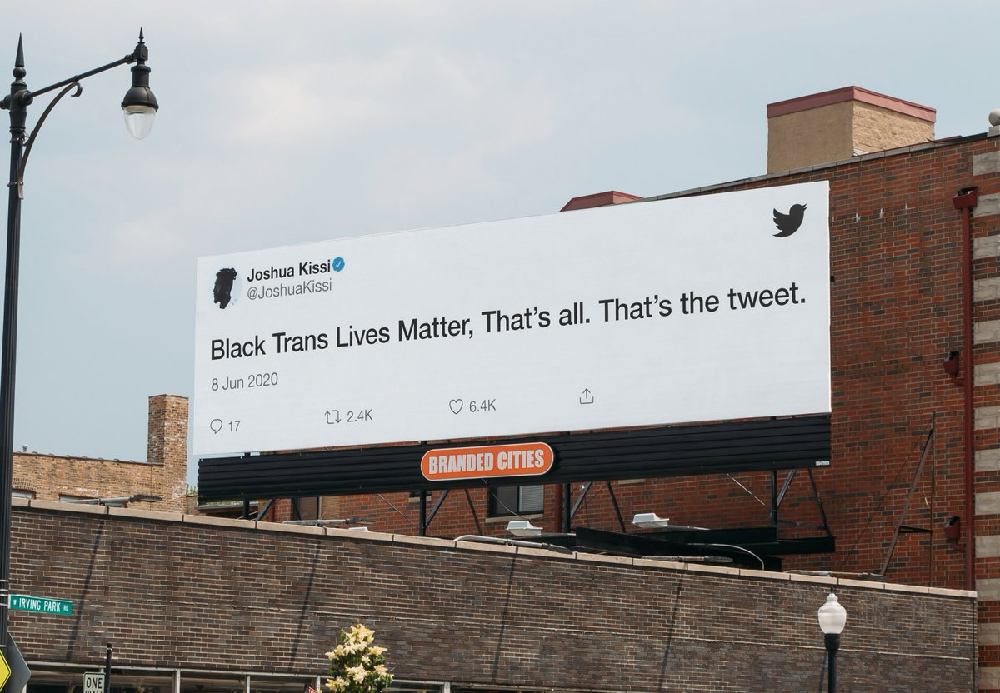
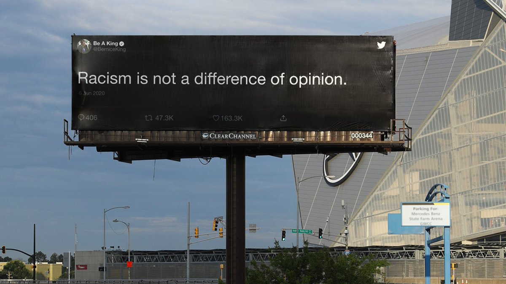

ಟ್ವೀಟ್ಗಳು
- ಟ್ವೀಟ್ಗಳು, ಪ್ರಸ್ತುತ ಪುಟ.
- ಟ್ವೀಟ್ಗಳು & ಪ್ರತಿಕ್ರಿಯೆಗಳು
- ಮಾಧ್ಯಮ
ನೀವು @Twitter ಅವರನ್ನು ತಡೆಹಿಡಿದಿರುವಿರಿ
ಈ ಟ್ವೀಟ್ಗಳನ್ನು ವೀಕ್ಷಿಸಲು ನೀವು ಖಚಿತವಾಗಿ ಬಯಸುವಿರಾ? ಟ್ವೀಟ್ ವೀಕ್ಷಣೆಯು @Twitter ಅವರ ತಡೆತೆರವುಗೊಳಿಸುವುದಿಲ್ಲ
-
ಪಿನ್ ಮಾಡಿದ ಟ್ವೀಟ್ಧನ್ಯವಾದಗಳು. Twitter ಇದನ್ನು ನಿಮ್ಮ ಕಾಲರೇಖೆಯನ್ನು ಉತ್ತಮಗೊಳಿಸಲು ಬಳಸುತ್ತದೆ. ರದ್ದುಗೊಳಿಸುರದ್ದುಗೊಳಿಸು
-
You can have an edit button when everyone wears a mask
ಧನ್ಯವಾದಗಳು. Twitter ಇದನ್ನು ನಿಮ್ಮ ಕಾಲರೇಖೆಯನ್ನು ಉತ್ತಮಗೊಳಿಸಲು ಬಳಸುತ್ತದೆ. ರದ್ದುಗೊಳಿಸುರದ್ದುಗೊಳಿಸು -
Good news and bad news: 2020 is half over
ಧನ್ಯವಾದಗಳು. Twitter ಇದನ್ನು ನಿಮ್ಮ ಕಾಲರೇಖೆಯನ್ನು ಉತ್ತಮಗೊಳಿಸಲು ಬಳಸುತ್ತದೆ. ರದ್ದುಗೊಳಿಸುರದ್ದುಗೊಳಿಸು -

ಈ ಥ್ರೆಡ್ ತೋರಿಸಿಧನ್ಯವಾದಗಳು. Twitter ಇದನ್ನು ನಿಮ್ಮ ಕಾಲರೇಖೆಯನ್ನು ಉತ್ತಮಗೊಳಿಸಲು ಬಳಸುತ್ತದೆ. ರದ್ದುಗೊಳಿಸುರದ್ದುಗೊಳಿಸು -
ಧನ್ಯವಾದಗಳು. Twitter ಇದನ್ನು ನಿಮ್ಮ ಕಾಲರೇಖೆಯನ್ನು ಉತ್ತಮಗೊಳಿಸಲು ಬಳಸುತ್ತದೆ. ರದ್ದುಗೊಳಿಸುರದ್ದುಗೊಳಿಸು
-

ಈ ಥ್ರೆಡ್ ತೋರಿಸಿಧನ್ಯವಾದಗಳು. Twitter ಇದನ್ನು ನಿಮ್ಮ ಕಾಲರೇಖೆಯನ್ನು ಉತ್ತಮಗೊಳಿಸಲು ಬಳಸುತ್ತದೆ. ರದ್ದುಗೊಳಿಸುರದ್ದುಗೊಳಿಸು -
ಧನ್ಯವಾದಗಳು. Twitter ಇದನ್ನು ನಿಮ್ಮ ಕಾಲರೇಖೆಯನ್ನು ಉತ್ತಮಗೊಳಿಸಲು ಬಳಸುತ್ತದೆ. ರದ್ದುಗೊಳಿಸುರದ್ದುಗೊಳಿಸು
-
ಧನ್ಯವಾದಗಳು. Twitter ಇದನ್ನು ನಿಮ್ಮ ಕಾಲರೇಖೆಯನ್ನು ಉತ್ತಮಗೊಳಿಸಲು ಬಳಸುತ್ತದೆ. ರದ್ದುಗೊಳಿಸುರದ್ದುಗೊಳಿಸು
-

ಈ ಥ್ರೆಡ್ ತೋರಿಸಿಧನ್ಯವಾದಗಳು. Twitter ಇದನ್ನು ನಿಮ್ಮ ಕಾಲರೇಖೆಯನ್ನು ಉತ್ತಮಗೊಳಿಸಲು ಬಳಸುತ್ತದೆ. ರದ್ದುಗೊಳಿಸುರದ್ದುಗೊಳಿಸು -
Twitter ಅವರು ಮರುಟ್ವೀಟಿಸಿದ್ದಾರೆ
Juneteenth is a celebration. It’s about our freedom. And within that freedom is our joy.
#BlackJoy is a form of resistance.pic.twitter.com/yyVBdAM0nfಧನ್ಯವಾದಗಳು. Twitter ಇದನ್ನು ನಿಮ್ಮ ಕಾಲರೇಖೆಯನ್ನು ಉತ್ತಮಗೊಳಿಸಲು ಬಳಸುತ್ತದೆ. ರದ್ದುಗೊಳಿಸುರದ್ದುಗೊಳಿಸು -
Twitter ಅವರು ಮರುಟ್ವೀಟಿಸಿದ್ದಾರೆ
Juneteenth represents freedom, emancipation, and liberation. To celebrate
#Juneteenth is to know Black history. It's to know American history. And it’s to understand the work doesn’t stop here. Here are voices and resources to keep you going. And here’s why... pic.twitter.com/NsNi6aFKmzಈ ಥ್ರೆಡ್ ತೋರಿಸಿಧನ್ಯವಾದಗಳು. Twitter ಇದನ್ನು ನಿಮ್ಮ ಕಾಲರೇಖೆಯನ್ನು ಉತ್ತಮಗೊಳಿಸಲು ಬಳಸುತ್ತದೆ. ರದ್ದುಗೊಳಿಸುರದ್ದುಗೊಳಿಸು -
ಧನ್ಯವಾದಗಳು. Twitter ಇದನ್ನು ನಿಮ್ಮ ಕಾಲರೇಖೆಯನ್ನು ಉತ್ತಮಗೊಳಿಸಲು ಬಳಸುತ್ತದೆ. ರದ್ದುಗೊಳಿಸುರದ್ದುಗೊಳಿಸು
-
Today is
#Juneteenth We’re honored to have@opalayo, one of the three Black women who co-founded#BlackLivesMatter, speak on the meaning of this day, this moment, and where we go from here.pic.twitter.com/0XwuQXM0tSಈ ಥ್ರೆಡ್ ತೋರಿಸಿಧನ್ಯವಾದಗಳು. Twitter ಇದನ್ನು ನಿಮ್ಮ ಕಾಲರೇಖೆಯನ್ನು ಉತ್ತಮಗೊಳಿಸಲು ಬಳಸುತ್ತದೆ. ರದ್ದುಗೊಳಿಸುರದ್ದುಗೊಳಿಸು -
Add new voices and conversations to your Timeline using Lists. You can now:
 make a List
discover new Lists
follow a List
Tweet a Listpic.twitter.com/7xhwMXRUWGಧನ್ಯವಾದಗಳು. Twitter ಇದನ್ನು ನಿಮ್ಮ ಕಾಲರೇಖೆಯನ್ನು ಉತ್ತಮಗೊಳಿಸಲು ಬಳಸುತ್ತದೆ. ರದ್ದುಗೊಳಿಸುರದ್ದುಗೊಳಿಸು
make a List
discover new Lists
follow a List
Tweet a Listpic.twitter.com/7xhwMXRUWGಧನ್ಯವಾದಗಳು. Twitter ಇದನ್ನು ನಿಮ್ಮ ಕಾಲರೇಖೆಯನ್ನು ಉತ್ತಮಗೊಳಿಸಲು ಬಳಸುತ್ತದೆ. ರದ್ದುಗೊಳಿಸುರದ್ದುಗೊಳಿಸು -
Tweets with audio are rolling out on iOS and we only have one thing to say about itpic.twitter.com/CZvQC1fo1W
ಧನ್ಯವಾದಗಳು. Twitter ಇದನ್ನು ನಿಮ್ಮ ಕಾಲರೇಖೆಯನ್ನು ಉತ್ತಮಗೊಳಿಸಲು ಬಳಸುತ್ತದೆ. ರದ್ದುಗೊಳಿಸುರದ್ದುಗೊಳಿಸು -
You can Tweet a Tweet. But now you can Tweet your voice! Rolling out today on iOS, you can now record and Tweet with audio.pic.twitter.com/jezRmh1dkD
ಧನ್ಯವಾದಗಳು. Twitter ಇದನ್ನು ನಿಮ್ಮ ಕಾಲರೇಖೆಯನ್ನು ಉತ್ತಮಗೊಳಿಸಲು ಬಳಸುತ್ತದೆ. ರದ್ದುಗೊಳಿಸುರದ್ದುಗೊಳಿಸು -
stay loud
ಧನ್ಯವಾದಗಳು. Twitter ಇದನ್ನು ನಿಮ್ಮ ಕಾಲರೇಖೆಯನ್ನು ಉತ್ತಮಗೊಳಿಸಲು ಬಳಸುತ್ತದೆ. ರದ್ದುಗೊಳಿಸುರದ್ದುಗೊಳಿಸು -
Twitter ಅವರು ಮರುಟ್ವೀಟಿಸಿದ್ದಾರೆ
There's power in healing. There's power in our voices. There's power in our platforms. We've curated "Thread of Threads:
#BlackLivesMatter" —an ongoing Moment that will center and amplify Black voices, provide resources, and uplift.https://twitter.com/i/events/1270493073512906753 …ಧನ್ಯವಾದಗಳು. Twitter ಇದನ್ನು ನಿಮ್ಮ ಕಾಲರೇಖೆಯನ್ನು ಉತ್ತಮಗೊಳಿಸಲು ಬಳಸುತ್ತದೆ. ರದ್ದುಗೊಳಿಸುರದ್ದುಗೊಳಿಸು -
Twitter ಅವರು ಮರುಟ್ವೀಟಿಸಿದ್ದಾರೆ
Both Twitter and Square are making
#Juneteenth (June 19th) a company holiday in the US, forevermore. A day for celebration, education, and connection. http://www.juneteenth.com/history.htmಈ ಥ್ರೆಡ್ ತೋರಿಸಿಧನ್ಯವಾದಗಳು. Twitter ಇದನ್ನು ನಿಮ್ಮ ಕಾಲರೇಖೆಯನ್ನು ಉತ್ತಮಗೊಳಿಸಲು ಬಳಸುತ್ತದೆ. ರದ್ದುಗೊಳಿಸುರದ್ದುಗೊಳಿಸು -
Twitter ಅವರು ಮರುಟ್ವೀಟಿಸಿದ್ದಾರೆ
We are bold. We are brave. We are empowered. We are
#AlwaysProudpic.twitter.com/LVq2ZQLWS0ಈ ಥ್ರೆಡ್ ತೋರಿಸಿಧನ್ಯವಾದಗಳು. Twitter ಇದನ್ನು ನಿಮ್ಮ ಕಾಲರೇಖೆಯನ್ನು ಉತ್ತಮಗೊಳಿಸಲು ಬಳಸುತ್ತದೆ. ರದ್ದುಗೊಳಿಸುರದ್ದುಗೊಳಿಸು
![Audio transcription 1/2
Yo, Happy Juneteenth people. This is Opal Tometi, and I am one of the three Black women who co-founded Black Lives Matter. And I have to say, this Juneteenth feels extra special. For some, this day is an annual acknowledgement. For others, this may be your first time recognizing the significance of this day. Whatever the case may be—welcome. For me, Juneteenth means freedom. It means dignity. It means being steadfast in the joy and liberty that is our birthright.
Juneteenth is a historic day in the United States and it deserves more attention than it receives. It's important that we understand that there was a two and a half year gap between the Emancipation Proclamation and the end of slavery in practice. What it teaches us is that flipping the status quo isn't as simple as just enacting a law, but it's just a starting point.](./Ea4AwvRXgAAn-8c.jpg)
![Audio transcription 2/2
Now, I personally love Juneteenth because it represents Black agency. That we have an ability to take charge, build power, and write our own future. And so I, like many others, celebrate Juneteenth the way some celebrate 4th of July—events, cookouts, and now digital gatherings as a community. Days like this fuel me with Black joy that keeps me resilient in challenging times.
This year, Juneteenth holds an even greater significance because as a collective, we are in a capital H history-writing moment. And y'all, I am just so proud of us and I encourage you to continue to create time and space for Black joy, to celebrate and recognize our victories while we stay focused on our path ahead. Y'all, together we're building a world we can be proud of, one where all Black lives matter, a world where we are all finally free. Happy Juneteenth everybody—let's keep going.](./Ea4AgScXkAobWO3.jpg)
ಲೋಡಿಂಗ್ ಸಮಯ ಸ್ವಲ್ಪ ತೆಗೆದುಕೊಳ್ಳುತ್ತಿರುವಂತೆನಿಸುತ್ತದೆ.
Twitter ಸಾಮರ್ಥ್ಯ ಮೀರಿರಬಹುದು ಅಥವಾ ಕ್ಷಣಿಕವಾದ ತೊಂದರೆಯನ್ನು ಅನುಭವಿಸುತ್ತಿರಬಹುದು. ಮತ್ತೆ ಪ್ರಯತ್ನಿಸಿ ಅಥವಾ ಹೆಚ್ಚಿನ ಮಾಹಿತಿಗೆ Twitter ಸ್ಥಿತಿಗೆ ಭೇಟಿ ನೀಡಿ.